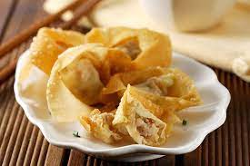

Pangsit udang

Bahan :
- 20 lembar kulit pangsit
- 10 ekor udang sedang
- 200 gram daging cincang
- 100 gram udang cincang
- 1 butir telur
- ½ sdm minyak wijen
- 1 sdm kecap asin
- 1 sdm tepung terigu
- ½ sdm fiber cream
- Garam, gula, merica dan perasa
Cara :
- Bersihkan udang buang kotoran dan kulit udang tinggalkan ekor, Kerat bagian bawah udang lurus kan udang.
- Marinasi udang dengan garam, minyak wijen,merica dan sedikit tepung jagung selama 15 menit.
- Marinasi daging cincang, udang cincang dengan telur, udang cincang dengan telur, kecap asin, tepung jagung, fibercreme, garam, gula, merica dan perasa. Aduk dengan sumpit sampai rata diamkan 15 menit.
- Ambil selembar kulit pangsit tadi beri adonan kemudian beri selembar lagi kulit pangsit sambungkan kulit pangsit tadi beri adonan.
- Taruh udang di atas adonan dan gulung sampai ujung lekatkan dengan air.
- Lakukan sampai habis.
- Panaskan air dipanci beri 1 sdm minyak wijen biarkan mendidih baru masukkan pangsit udang.
- Masak hingga matang dan siap disajikan cocok dengan sambal.